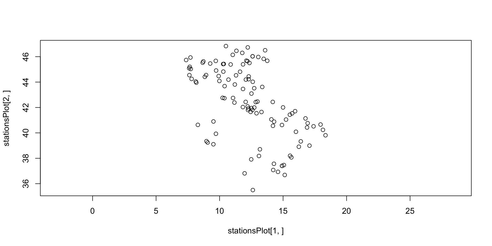
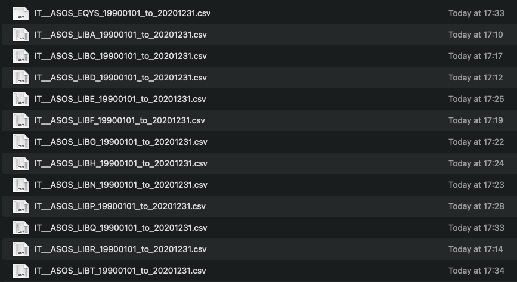

Biologia della Conservazione
Class 20 - Climate change-data retrieval
2024-05-30
Topics
- Introduction to conservation biology
- Biodiversity
- Biodiversity and extinctions
- Populations
- Basics of conservation genetics
- Genetic drift
- Effective population size
- Inbreeding depression
- Population structure
- Hybridization
- Applying genetic information to conservation
- Managing genetic diversity in captive populations
- Managing genetic diversity in the wild
- Population viability analysis
- Invasive species
- CITES and trade regulations of endangered species
- Conservation and climate change
- Future climate impacts
- Conservation economics
- Conservation technology
Climate change quiz!
Most of the Earth’s water is found in:
- The earth’s interior
- The atmosphere
- Lakes and rivers
- The ocean
- The polar ice caps
d)
Most of Earth’s water (\(96.5\%\)) is saline, or salty, ocean seawater. Most of the fresh water is tied up in glaciers and ice sheets, which means that only a relatively small portion is available to sustain human, plant and animal life.
- This is the link to the climate change quizzes!
Which of these has a greater effect on global sea level?
- Melting sea ice
- Melting land ice
- a and b combined
- Extreme precipitation events
- None of the above
b)
Sea level rise is caused primarily by two factors related to global warming: the added water from melting land ice and the expansion of seawater as it warms. Melting sea ice does not contribute nearly as much to ocean water volume because floating ice displaces water in an amount equal to its volume. Some coastal regions and island nations have begun to experience the consequences of sea level rise. Rising seas not only affect dwellings and infrastructure, but fresh water is also affected as rising saltwater begins to contaminate it through “saltwater intrusion.”
Measurements of Earth’s gravitational field permit topographic, or surface, mapping of the ocean floor.
- True
- False
True
Undersea mountain ranges like the the Mid-Atlantic Ridge, chains of islands and sea mounts like the strand from Hawai’i Island past Midway to the Aleutian Islands chain, and deep sea trenches like the Japan Trench can be identified in data collected by the GRACE (Gravity Recovery and Climate Experiment) spacecraft. The additional mass of rock that composes the undersea mountains and the lack of rock in trenches provide gravitational telltales that GRACE can detect.
The only current that makes an uninterrupted circle around the entire Earth without hitting land is the:
- Gulf stream
- Japan current
- California current
- Antarctic Circumpolar Current
- Monsoons
d)
Ocean currents are driven by ocean winds and influenced by the “Coriolis effect.” Water flows along the current until it encounters land, where the Coriolis effect causes the current to rotate clockwise in the northern hemisphere and counterclockwise in the south. Most currents form “gyres,” or large systems of rotating ocean currents. The gyre’s rotational patterns draw in debris from across the ocean, while wind patterns push the trash toward the center, trapping it there. In the Southern Ocean around Antarctica, there is no land, which allows the Antarctic Circumpolar Current to travel around the globe uninterrupted.
Tides are caused by:
- The wind
- Earthquakes
- The moon’s gravitational pool
- The gravitational pool of both the moon and the sun
- People swimming
d)
Both the sun and the moon influence tide rise and fall, which are caused by the gravitational attraction between the ocean and the moon as well as the ocean and the sun. “Centrifugal force” — the same force that pulls you backward on the teacup ride at Disneyland – is generated from Earth’s spin and is another factor that influences Earth’s tides.
About how much of Earth’s surface is covered by clouds at any given time?
- \(15\%\)
- \(30\%\)
- \(60\%\)
- \(90\%\)
- \(95\%\)
c)
Covering most of the Earth at any given moment, clouds have a huge—but insufficiently understood—impact on climate.
What effects do various aerosols have on the climate?
- Reflect sunlight back in to space, cooling the planet
- Provide a platform for water droplets and ice crystals to form and develop in to cloud
- Increase the brightness of clouds making them reflect more sunlight in to space
- Absorb sunlight, heat the surrounding air and prevent cloud formation
- All of the above
- a, b, and c
e)
That’s part of what makes aerosols so hard to pin down in climate models. Various kinds of aerosols have various kinds of effects, both direct and indirect. As a direct effect, aerosols scatter sunlight back into space. As an indirect effect, they can either help or hinder the development of clouds, which in turn can either cool or warm the planet.
The brighter a cloud looks, the less pollution it contains.
- True
- False
False
A given volume of pollution-rich cloud tends to have more numerous and smaller droplets than in more pristine clouds. The high number of small droplets provides more surfaces to reflect light, making the cloud appear brighter than a cloud consisting of fewer and larger droplets.
Do clouds heat or cool Earth?
- Heat
- Cool
- Both heat and cool
- Neither heat nor cool
c)
Different kinds of clouds at different altitudes play different roles in regulating Earth’s temperature. Wispy clouds at high altitudes tend to trap infrared radiation emitted by the sun-warmed Earth, which prevents it from escaping into space and warms the atmosphere. On the other hand, thick, low-lying clouds tend to cool the planet by shading Earth’s surface, reflecting sunlight back into space. Scientists are trying to determine how global warming will affect the balance we’ve been enjoying up to now.
Let’s work with some data
On-line data resources:
- Take your computer and open R.
- We will be downloading historical data from the ASOS data repository available at Iowa State.
- We will working on data from the Italian network of automated weather stations.
- First lets take a look at the website to see how we can use R to automate the process of downloading the data and eventually analyse them.
Input from the user
Now that we know the web site, we can set up a script to automate the downloading of the data. This process is often trial and error, but eventually it could work.
. . .
# first, we need to specify the date boundaries of our dataset
date1 <- ISOdate(1990,1,1) #start date in year, month, day format
date2 <- ISOdate(2020,12,31) #end date in year, month, day format
# second, we need to specify the data network parameter we want to download the data from
# and the state we want to download the data from
user.network <- c("ASOS")
user.state <- c("IT") #state. . .
We can now start and retrieve the identifier of all the weather stations we are interested in.
We use the URL address we have prepared and try to retrieve the information we want.
# first we tell R that that string has to be treated as a URL
# in this way R will be opening a connection to that specific URL
# and we will be able to access the website and do our things
data <- url(uri)
dataA connection with
description "https://mesonet.agron.iastate.edu/geojson/network/IT__ASOS.geojson"
class "url-libcurl"
mode "r"
text "text"
opened "closed"
can read "yes"
can write "no" Now we can use that connection to read the information.
$type
[1] "FeatureCollection"
$features
type id properties.elevation properties.sname
1 Feature LIMG 49.0000 Albenga
2 Feature LIEA 23.0000 Alghero
3 Feature LIBA 60.0000 Amendola
4 Feature LIPY 10.0000 Ancona
5 Feature LIMW 545.0000 Aosta
6 Feature LIQB 246.8307 Arezzo
7 Feature LIPA 126.0000 Aviano
8 Feature LIYW 126.0000 AVIANO (USAF)
9 Feature LIBD 44.0000 Bari
10 Feature LIME 237.0000 Bergamo
11 Feature LIPE 42.0000 Bologna
12 Feature LIPB 241.0000 Bolzano
13 Feature LIPO 109.0000 Brescia
14 Feature LIBR 10.0000 Brindisi
15 Feature LIEE 4.0000 Cagliari
16 Feature LIMN 169.0000 Cameri
17 Feature LIEB 156.0000 CAPE BELLAVISTA
18 Feature LIEC 118.0000 CAPE CARBONARA
19 Feature LIMU 221.0000 CAPE MELE
20 Feature LIQC 269.0000 CAPRI ISLAND
21 Feature LICC 17.0000 Catania
22 Feature LIPC 10.0000 Cervia
23 Feature LIVC 2173.0000 CIMONE MOUNTAIN
24 Feature LIMT 1040.0000 CISA PASS
25 Feature LIQJ 4.0000 CIVITAVECCHIA
26 Feature LICB 292.5910 Comiso
27 Feature LICO 51.0000 COZZO SPADARO
28 Feature LIBC 161.0000 Crotone
29 Feature LIMZ 380.0000 Cuneo
30 Feature LIED 28.0000 Decimomannu
31 Feature LIVD 1226.0000 DOBBIACO
32 Feature LICE 965.0000 ENNA
33 Feature LIPF 10.0000 FERRARA (AUT)
34 Feature LIRQ 38.0000 Florence
35 Feature LIBF 80.0000 Foggia
36 Feature LIPK 32.0000 Forli
37 Feature LIVF 574.0000 FRONTONE
38 Feature LIRH 181.0000 FROSINONE (IT-AFB)
39 Feature LICL 33.0000 GELA
40 Feature LIMJ 3.0000 Genoa
41 Feature LIPL 92.0000 Ghedi
42 Feature LIBV 350.0000 Gioia Del Colle
43 Feature LIMV 475.0000 GIOVI PASS
44 Feature LIRM 10.0000 Grazzanise
45 Feature LIRS 7.0000 Grosseto
46 Feature LIBG 69.0000 Grottaglie
47 Feature LIRG 89.0000 Guidonia
48 Feature LICA 15.0000 Lamezia
49 Feature LICD 20.0000 Lampedusa
50 Feature LIRL 26.0000 Latina
51 Feature LIBU 896.0000 LATRONICO
52 Feature LIBN 61.0000 Lecce
53 Feature LIMY 1742.0000 MALANOTTE MOUNTAIN
54 Feature LIRJ 397.0000 Marina Di Campo
55 Feature LIBH 12.0000 MARINA DI GINOSA
56 Feature LICF 51.0000 MESSINA
57 Feature LIML 103.0000 Milan
58 Feature LIMC 211.0000 Milano
59 Feature LIRX 297.0000 MONTE CALAMITA
60 Feature LIBE 834.1110 Monte S. Angelo
61 Feature LIQO 632.0000 MOUNT ARGENTARIO
62 Feature LIRN 72.0000 Naples
63 Feature LIEO 13.0000 Olbia
64 Feature LIPU 14.0000 Padova
65 Feature LIVP 2129.0000 PAGANELLA MOUNTAIN
66 Feature LICJ 34.0000 Palermo
67 Feature LICG 191.0000 Pantelleria
68 Feature LIMP 50.0000 Parma
69 Feature LIRZ 205.0000 Perugia
70 Feature LIBP 11.0000 Pescara
71 Feature LIMS 138.0000 Piacenza
72 Feature LIMH 3488.0000 PIAN ROSA (MTN TOP)
73 Feature LIRP 2.0000 Pisa
74 Feature LIVM 6.0000 POINT MARINA/RAVENN
75 Feature LIRE 12.0000 Pratica Di Mare
76 Feature LICR 21.0000 Reggio Calabria
77 Feature LIVE 1800.0000 RESIA PASS
78 Feature LIQN 389.0000 RIETI
79 Feature LIPR 13.0000 Rimini
80 Feature LIPI 53.0000 Rivolto
81 Feature LIVR 2006.0000 ROLLE PASS
82 Feature LIRF 3.0000 Rome
83 Feature LIRA 101.0000 Rome
84 Feature LIRU 24.0000 Rome
85 Feature LIPQ 12.0000 Ronchi De Legionari
86 Feature LIRI 40.0000 Salerno
87 Feature LIBY 112.0000 SANTA MARIA DI LEUC
88 Feature LIQW 10.0000 Sarzana (SP)
89 Feature LIBQ 1720.0000 SCURO MOUNTAIN
90 Feature LICZ 22.0000 Sigonella
91 Feature EQYS 23.0000 Sigonella
92 Feature LIVO 778.0000 TARVISIO
93 Feature LIRK 1875.0000 TERMINILLO MOUNTAIN
94 Feature LIBT 44.0000 TERMOLI
95 Feature LIMF 287.0000 Torino
96 Feature LIMK 710.0000 TORINO/BRIC CROCE
97 Feature LICT 7.0000 Trapani
98 Feature LIRT 1093.0000 TREVICO
99 Feature LIPH 23.0000 Treviso
100 Feature LIPS 41.0000 Treviso
101 Feature LIVT 20.0000 TRIESTE
102 Feature LIMA 287.0000 Turin
103 Feature LIRY 31.0000 Unknown
104 Feature LICU 251.0000 USTICA ISLAND
105 Feature LIPZ 6.0000 Venice
106 Feature LIRB 258.0539 Vigna Di Valle
107 Feature LIPX 68.0000 Villafranca
108 Feature LIRV 300.0000 Viterbo
properties.time_domain properties.archive_begin properties.archive_end
1 (1973-Now) 1973-01-01 <NA>
2 (1957-Now) 1957-06-30 <NA>
3 (1944-Now) 1944-01-31 <NA>
4 (1945-Now) 1945-04-14 <NA>
5 (1984-Now) 1984-06-30 <NA>
6 (1978-2016) 1978-09-14 2016-03-06
7 (1966-Now) 1966-06-30 <NA>
8 (1993-2015) 1993-06-30 2015-10-20
9 (1943-Now) 1943-12-07 <NA>
10 (1966-Now) 1966-09-08 <NA>
11 (1964-Now) 1964-08-10 <NA>
12 (1965-Now) 1965-01-28 <NA>
13 (2002-Now) 2002-02-21 <NA>
14 (1943-Now) 1943-11-29 <NA>
15 (1943-Now) 1943-11-01 <NA>
16 (1966-Now) 1966-09-22 <NA>
17 (1966-Now) 1966-01-04 <NA>
18 (1972-Now) 1972-12-31 <NA>
19 (1965-Now) 1965-04-30 <NA>
20 (1972-Now) 1972-12-31 <NA>
21 (1943-Now) 1943-10-28 <NA>
22 (1972-Now) 1972-12-31 <NA>
23 (1965-Now) 1965-01-31 <NA>
24 (1972-2019) 1972-12-31 2019-09-23
25 (2005-2021) 2005-07-27 2021-08-26
26 (1984-Now) 1984-03-23 <NA>
27 (1965-2016) 1965-12-31 2016-03-13
28 (1957-Now) 1957-06-30 <NA>
29 (2003-Now) 2003-01-01 <NA>
30 (1966-Now) 1966-09-22 <NA>
31 (1973-Now) 1973-01-01 <NA>
32 (1972-2014) 1972-12-31 2014-01-20
33 (1973-Now) 1973-01-01 <NA>
34 (1931-Now) 1931-01-02 <NA>
35 (1943-Now) 1943-09-30 <NA>
36 (1972-Now) 1972-12-31 <NA>
37 (1973-Now) 1973-01-01 <NA>
38 (1972-Now) 1972-12-31 <NA>
39 (1943-Now) 1943-09-02 <NA>
40 (1928-Now) 1928-01-01 <NA>
41 (1966-Now) 1966-09-04 <NA>
42 (1944-Now) 1944-02-29 <NA>
43 (1972-Now) 1972-12-31 <NA>
44 (1944-Now) 1944-03-31 <NA>
45 (1944-Now) 1944-12-11 <NA>
46 (1943-Now) 1943-09-27 <NA>
47 (1966-Now) 1966-09-23 <NA>
48 (1977-Now) 1977-10-31 <NA>
49 (1966-Now) 1966-01-04 <NA>
50 (1944-Now) 1944-03-01 <NA>
51 (2005-2016) 2005-07-27 2016-02-12
52 (1943-Now) 1943-12-31 <NA>
53 (1973-Now) 1973-06-07 <NA>
54 (2010-2012) 2010-12-31 2012-01-20
55 (1967-Now) 1967-03-17 <NA>
56 (1931-Now) 1931-01-01 <NA>
57 (1931-Now) 1931-01-04 <NA>
58 (1965-Now) 1965-02-03 <NA>
59 (1972-Now) 1972-12-31 <NA>
60 (2003-2014) 2003-08-01 2014-04-27
61 (1972-Now) 1972-12-31 <NA>
62 (1951-Now) 1951-09-30 <NA>
63 (1969-Now) 1969-11-17 <NA>
64 (1973-Now) 1973-01-01 <NA>
65 (1972-Now) 1972-12-31 <NA>
66 (1964-Now) 1964-08-10 <NA>
67 (1943-Now) 1943-06-20 <NA>
68 (2003-Now) 2003-01-01 <NA>
69 (1967-Now) 1967-11-06 <NA>
70 (1965-Now) 1965-01-31 <NA>
71 (1966-Now) 1966-09-14 <NA>
72 (1965-Now) 1965-01-28 <NA>
73 (1944-Now) 1944-11-24 <NA>
74 (1966-Now) 1966-01-04 <NA>
75 (1966-Now) 1966-09-23 <NA>
76 (1972-Now) 1972-12-31 <NA>
77 (1987-Now) 1987-03-25 <NA>
78 (1973-Now) 1973-12-13 <NA>
79 (1945-Now) 1945-04-07 <NA>
80 (1958-Now) 1958-04-14 <NA>
81 (1973-Now) 1973-01-01 <NA>
82 (1965-Now) 1965-06-30 <NA>
83 (1951-Now) 1951-09-30 <NA>
84 (1972-Now) 1972-12-31 <NA>
85 (1972-Now) 1972-12-31 <NA>
86 (1993-Now) 1993-01-29 <NA>
87 (1965-Now) 1965-01-31 <NA>
88 (1973-Now) 1973-11-08 <NA>
89 (2001-Now) 2001-07-21 <NA>
90 (1943-Now) 1943-08-10 <NA>
91 (2022-2022) 2022-04-12 2022-05-27
92 (1965-Now) 1965-01-28 <NA>
93 (1965-Now) 1965-01-31 <NA>
94 (1972-2016) 1972-12-31 2016-03-16
95 (1964-Now) 1964-08-10 <NA>
96 (1972-Now) 1972-12-31 <NA>
97 (1965-Now) 1965-01-31 <NA>
98 (1972-Now) 1972-12-31 <NA>
99 (1966-Now) 1966-09-01 <NA>
100 (1966-Now) 1966-09-04 <NA>
101 (1932-Now) 1932-10-20 <NA>
102 (2008-Now) 2008-04-25 <NA>
103 (2023-Now) 2023-07-16 <NA>
104 (1957-2021) 1957-06-30 2021-08-26
105 (1961-Now) 1961-03-01 <NA>
106 (1973-2016) 1973-01-01 2016-03-03
107 (1945-Now) 1945-05-17 <NA>
108 (1944-Now) 1944-06-30 <NA>
properties.state properties.country properties.climate_site properties.wfo
1 <NA> IT NA NA
2 <NA> IT NA NA
3 <NA> IT NA NA
4 <NA> IT NA NA
5 <NA> IT NA NA
6 IT NA NA
7 <NA> IT NA NA
8 <NA> IT NA NA
9 <NA> IT NA NA
10 <NA> IT NA NA
11 <NA> IT NA NA
12 <NA> IT NA NA
13 <NA> IT NA NA
14 <NA> IT NA NA
15 <NA> IT NA NA
16 <NA> IT NA NA
17 <NA> IT NA NA
18 <NA> IT NA NA
19 <NA> IT NA NA
20 <NA> IT NA NA
21 <NA> IT NA NA
22 <NA> IT NA NA
23 <NA> IT NA NA
24 <NA> IT NA NA
25 <NA> IT NA NA
26 <NA> IT NA NA
27 <NA> IT NA NA
28 <NA> IT NA NA
29 <NA> IT NA NA
30 <NA> IT NA NA
31 <NA> IT NA NA
32 <NA> IT NA NA
33 <NA> IT NA NA
34 <NA> IT NA NA
35 <NA> IT NA NA
36 <NA> IT NA NA
37 <NA> IT NA NA
38 <NA> IT NA NA
39 <NA> IT NA NA
40 <NA> IT NA NA
41 <NA> IT NA NA
42 <NA> IT NA NA
43 <NA> IT NA NA
44 <NA> IT NA NA
45 <NA> IT NA NA
46 <NA> IT NA NA
47 <NA> IT NA NA
48 <NA> IT NA NA
49 <NA> IT NA NA
50 <NA> IT NA NA
51 <NA> IT NA NA
52 <NA> IT NA NA
53 <NA> IT NA NA
54 <NA> IT NA NA
55 <NA> IT NA NA
56 <NA> IT NA NA
57 <NA> IT NA NA
58 <NA> IT NA NA
59 <NA> IT NA NA
60 <NA> IT NA NA
61 <NA> IT NA NA
62 <NA> IT NA NA
63 <NA> IT NA NA
64 <NA> IT NA NA
65 <NA> IT NA NA
66 <NA> IT NA NA
67 <NA> IT NA NA
68 <NA> IT NA NA
69 <NA> IT NA NA
70 <NA> IT NA NA
71 <NA> IT NA NA
72 <NA> IT NA NA
73 <NA> IT NA NA
74 <NA> IT NA NA
75 <NA> IT NA NA
76 <NA> IT NA NA
77 <NA> IT NA NA
78 <NA> IT NA NA
79 <NA> IT NA NA
80 <NA> IT NA NA
81 <NA> IT NA NA
82 <NA> IT NA NA
83 <NA> IT NA NA
84 <NA> IT NA NA
85 <NA> IT NA NA
86 <NA> IT NA NA
87 <NA> IT NA NA
88 <NA> IT NA NA
89 <NA> IT NA NA
90 <NA> IT NA NA
91 IT NA NA
92 <NA> IT NA NA
93 <NA> IT NA NA
94 <NA> IT NA NA
95 <NA> IT NA NA
96 <NA> IT NA NA
97 <NA> IT NA NA
98 <NA> IT NA NA
99 <NA> IT NA NA
100 <NA> IT NA NA
101 <NA> IT NA NA
102 <NA> IT NA NA
103 IT NA NA
104 <NA> IT NA NA
105 <NA> IT NA NA
106 IT NA NA
107 <NA> IT NA NA
108 <NA> IT NA NA
properties.tzname properties.ncdc81 properties.ncei91 properties.ugc_county
1 Europe/Rome NA NA NA
2 Europe/Rome NA NA NA
3 Europe/Rome NA NA NA
4 Europe/Rome NA NA NA
5 Europe/Rome NA NA NA
6 Europe/Rome NA NA NA
7 Europe/Rome NA NA NA
8 Europe/Rome NA NA NA
9 Europe/Rome NA NA NA
10 Europe/Rome NA NA NA
11 Europe/Rome NA NA NA
12 Europe/Rome NA NA NA
13 Europe/Rome NA NA NA
14 Europe/Rome NA NA NA
15 Europe/Rome NA NA NA
16 Europe/Rome NA NA NA
17 Europe/Rome NA NA NA
18 Europe/Rome NA NA NA
19 Europe/Rome NA NA NA
20 Europe/Rome NA NA NA
21 Europe/Rome NA NA NA
22 Europe/Rome NA NA NA
23 Europe/Rome NA NA NA
24 Europe/Rome NA NA NA
25 Europe/Rome NA NA NA
26 Europe/Rome NA NA NA
27 Europe/Rome NA NA NA
28 Europe/Rome NA NA NA
29 Europe/Rome NA NA NA
30 Europe/Rome NA NA NA
31 Europe/Rome NA NA NA
32 Europe/Rome NA NA NA
33 Europe/Rome NA NA NA
34 Europe/Rome NA NA NA
35 Europe/Rome NA NA NA
36 Europe/Rome NA NA NA
37 Europe/Rome NA NA NA
38 Europe/Rome NA NA NA
39 Europe/Rome NA NA NA
40 Europe/Rome NA NA NA
41 Europe/Rome NA NA NA
42 Europe/Rome NA NA NA
43 Europe/Rome NA NA NA
44 Europe/Rome NA NA NA
45 Europe/Rome NA NA NA
46 Europe/Rome NA NA NA
47 Europe/Rome NA NA NA
48 Europe/Rome NA NA NA
49 Europe/Rome NA NA NA
50 Europe/Rome NA NA NA
51 Europe/Rome NA NA NA
52 Europe/Rome NA NA NA
53 Europe/Rome NA NA NA
54 Europe/Rome NA NA NA
55 Europe/Rome NA NA NA
56 Europe/Rome NA NA NA
57 Europe/Rome NA NA NA
58 Europe/Rome NA NA NA
59 Europe/Rome NA NA NA
60 Europe/Rome NA NA NA
61 Europe/Rome NA NA NA
62 Europe/Rome NA NA NA
63 Europe/Rome NA NA NA
64 Europe/Rome NA NA NA
65 Europe/Rome NA NA NA
66 Europe/Rome NA NA NA
67 Europe/Rome NA NA NA
68 Europe/Rome NA NA NA
69 Europe/Rome NA NA NA
70 Europe/Rome NA NA NA
71 Europe/Rome NA NA NA
72 Europe/Rome NA NA NA
73 Europe/Rome NA NA NA
74 Europe/Rome NA NA NA
75 Europe/Rome NA NA NA
76 Europe/Rome NA NA NA
77 Europe/Rome NA NA NA
78 Europe/Rome NA NA NA
79 Europe/Rome NA NA NA
80 Europe/Rome NA NA NA
81 Europe/Rome NA NA NA
82 Europe/Rome NA NA NA
83 Europe/Rome NA NA NA
84 Europe/Rome NA NA NA
85 Europe/Rome NA NA NA
86 Europe/Rome NA NA NA
87 Europe/Rome NA NA NA
88 Europe/Rome NA NA NA
89 Europe/Rome NA NA NA
90 Europe/Rome NA NA NA
91 Europe/Rome NA NA NA
92 Europe/Rome NA NA NA
93 Europe/Rome NA NA NA
94 Europe/Rome NA NA NA
95 Europe/Rome NA NA NA
96 Europe/Rome NA NA NA
97 Europe/Rome NA NA NA
98 Europe/Rome NA NA NA
99 Europe/Rome NA NA NA
100 Europe/Rome NA NA NA
101 Europe/Rome NA NA NA
102 Europe/Rome NA NA NA
103 Europe/Rome NA NA NA
104 Europe/Rome NA NA NA
105 Europe/Rome NA NA NA
106 Europe/Rome NA NA NA
107 Europe/Rome NA NA NA
108 Europe/Rome NA NA NA
properties.ugc_zone properties.county properties.sid properties.network
1 NA NA LIMG IT__ASOS
2 NA NA LIEA IT__ASOS
3 NA NA LIBA IT__ASOS
4 NA NA LIPY IT__ASOS
5 NA NA LIMW IT__ASOS
6 NA NA LIQB IT__ASOS
7 NA NA LIPA IT__ASOS
8 NA NA LIYW IT__ASOS
9 NA NA LIBD IT__ASOS
10 NA NA LIME IT__ASOS
11 NA NA LIPE IT__ASOS
12 NA NA LIPB IT__ASOS
13 NA NA LIPO IT__ASOS
14 NA NA LIBR IT__ASOS
15 NA NA LIEE IT__ASOS
16 NA NA LIMN IT__ASOS
17 NA NA LIEB IT__ASOS
18 NA NA LIEC IT__ASOS
19 NA NA LIMU IT__ASOS
20 NA NA LIQC IT__ASOS
21 NA NA LICC IT__ASOS
22 NA NA LIPC IT__ASOS
23 NA NA LIVC IT__ASOS
24 NA NA LIMT IT__ASOS
25 NA NA LIQJ IT__ASOS
26 NA NA LICB IT__ASOS
27 NA NA LICO IT__ASOS
28 NA NA LIBC IT__ASOS
29 NA NA LIMZ IT__ASOS
30 NA NA LIED IT__ASOS
31 NA NA LIVD IT__ASOS
32 NA NA LICE IT__ASOS
33 NA NA LIPF IT__ASOS
34 NA NA LIRQ IT__ASOS
35 NA NA LIBF IT__ASOS
36 NA NA LIPK IT__ASOS
37 NA NA LIVF IT__ASOS
38 NA NA LIRH IT__ASOS
39 NA NA LICL IT__ASOS
40 NA NA LIMJ IT__ASOS
41 NA NA LIPL IT__ASOS
42 NA NA LIBV IT__ASOS
43 NA NA LIMV IT__ASOS
44 NA NA LIRM IT__ASOS
45 NA NA LIRS IT__ASOS
46 NA NA LIBG IT__ASOS
47 NA NA LIRG IT__ASOS
48 NA NA LICA IT__ASOS
49 NA NA LICD IT__ASOS
50 NA NA LIRL IT__ASOS
51 NA NA LIBU IT__ASOS
52 NA NA LIBN IT__ASOS
53 NA NA LIMY IT__ASOS
54 NA NA LIRJ IT__ASOS
55 NA NA LIBH IT__ASOS
56 NA NA LICF IT__ASOS
57 NA NA LIML IT__ASOS
58 NA NA LIMC IT__ASOS
59 NA NA LIRX IT__ASOS
60 NA NA LIBE IT__ASOS
61 NA NA LIQO IT__ASOS
62 NA NA LIRN IT__ASOS
63 NA NA LIEO IT__ASOS
64 NA NA LIPU IT__ASOS
65 NA NA LIVP IT__ASOS
66 NA NA LICJ IT__ASOS
67 NA NA LICG IT__ASOS
68 NA NA LIMP IT__ASOS
69 NA NA LIRZ IT__ASOS
70 NA NA LIBP IT__ASOS
71 NA NA LIMS IT__ASOS
72 NA NA LIMH IT__ASOS
73 NA NA LIRP IT__ASOS
74 NA NA LIVM IT__ASOS
75 NA NA LIRE IT__ASOS
76 NA NA LICR IT__ASOS
77 NA NA LIVE IT__ASOS
78 NA NA LIQN IT__ASOS
79 NA NA LIPR IT__ASOS
80 NA NA LIPI IT__ASOS
81 NA NA LIVR IT__ASOS
82 NA NA LIRF IT__ASOS
83 NA NA LIRA IT__ASOS
84 NA NA LIRU IT__ASOS
85 NA NA LIPQ IT__ASOS
86 NA NA LIRI IT__ASOS
87 NA NA LIBY IT__ASOS
88 NA NA LIQW IT__ASOS
89 NA NA LIBQ IT__ASOS
90 NA NA LICZ IT__ASOS
91 NA NA EQYS IT__ASOS
92 NA NA LIVO IT__ASOS
93 NA NA LIRK IT__ASOS
94 NA NA LIBT IT__ASOS
95 NA NA LIMF IT__ASOS
96 NA NA LIMK IT__ASOS
97 NA NA LICT IT__ASOS
98 NA NA LIRT IT__ASOS
99 NA NA LIPH IT__ASOS
100 NA NA LIPS IT__ASOS
101 NA NA LIVT IT__ASOS
102 NA NA LIMA IT__ASOS
103 NA NA LIRY IT__ASOS
104 NA NA LICU IT__ASOS
105 NA NA LIPZ IT__ASOS
106 NA NA LIRB IT__ASOS
107 NA NA LIPX IT__ASOS
108 NA NA LIRV IT__ASOS
properties.online geometry.type geometry.coordinates
1 TRUE Point 8.1256, 44.0458
2 TRUE Point 8.2886, 40.6311
3 TRUE Point 15.7139, 41.5381
4 TRUE Point 13.3603, 43.6167
5 TRUE Point 7.3687, 45.7385
6 FALSE Point 11.8456, 43.4597
7 TRUE Point 12.6033, 46.0286
8 FALSE Point 12.5992, 46.0303
9 TRUE Point 16.7650, 41.1381
10 TRUE Point 9.7003, 45.6689
11 TRUE Point 11.2969, 44.5308
12 TRUE Point 11.3264, 46.4603
13 TRUE Point 10.3306, 45.4289
14 TRUE Point 17.9514, 40.6577
15 TRUE Point 9.0603, 39.2434
16 TRUE Point 8.6692, 45.5296
17 TRUE Point 9.7132, 39.9307
18 TRUE Point 9.5135, 39.1039
19 TRUE Point 8.1697, 43.9572
20 TRUE Point 14.2023, 40.5582
21 TRUE Point 15.0639, 37.4667
22 TRUE Point 12.2919, 44.2289
23 TRUE Point 10.7000, 44.1936
24 FALSE Point 9.9286, 44.4719
25 FALSE Point 11.8331, 42.0328
26 TRUE Point 14.6000, 36.9333
27 FALSE Point 15.1314, 36.6861
28 TRUE Point 17.0792, 38.9967
29 TRUE Point 7.6232, 44.5470
30 TRUE Point 8.9675, 39.3461
31 TRUE Point 12.22, 46.73
32 FALSE Point 14.2797, 37.5681
33 TRUE Point 11.6125, 44.8156
34 TRUE Point 11.2028, 43.8086
35 TRUE Point 15.5350, 41.4329
36 TRUE Point 12.0697, 44.1956
37 TRUE Point 12.7278, 43.5169
38 TRUE Point 13.2994, 41.6450
39 TRUE Point 14.2250, 37.0764
40 TRUE Point 8.8375, 44.4133
41 TRUE Point 10.2814, 45.4206
42 TRUE Point 16.9353, 40.7661
43 TRUE Point 8.9375, 44.5522
44 TRUE Point 14.0789, 41.0606
45 TRUE Point 11.0589, 42.7481
46 TRUE Point 17.3997, 40.5172
47 TRUE Point 12.7344, 41.9967
48 TRUE Point 16.2417, 38.9083
49 TRUE Point 12.6183, 35.4981
50 TRUE Point 12.9097, 41.5458
51 FALSE Point 16.0136, 40.0875
52 TRUE Point 18.1389, 40.2383
53 TRUE Point 7.80, 44.25
54 FALSE Point 10.2393, 42.7618
55 TRUE Point 16.8867, 40.4244
56 TRUE Point 15.55, 38.20
57 TRUE Point 9.2626, 45.4614
58 TRUE Point 8.7231, 45.6300
59 TRUE Point 10.38, 42.73
60 FALSE Point 15.9476, 41.7084
61 TRUE Point 11.1697, 42.3869
62 TRUE Point 14.2917, 40.8848
63 TRUE Point 9.5178, 40.8986
64 TRUE Point 11.8479, 45.3958
65 TRUE Point 11.0376, 46.1434
66 TRUE Point 13.0994, 38.1819
67 TRUE Point 11.9711, 36.8139
68 TRUE Point 10.2964, 44.8245
69 TRUE Point 12.5103, 43.0972
70 TRUE Point 14.1872, 42.4372
71 TRUE Point 9.7278, 44.9092
72 TRUE Point 7.7072, 45.9352
73 TRUE Point 10.3956, 43.6825
74 TRUE Point 12.2961, 44.4414
75 TRUE Point 12.4452, 41.6545
76 TRUE Point 15.6536, 38.0719
77 TRUE Point 10.5000, 46.8333
78 TRUE Point 12.8500, 42.4267
79 TRUE Point 12.6128, 44.0244
80 TRUE Point 13.0492, 45.9756
81 TRUE Point 11.7867, 46.2978
82 TRUE Point 12.2389, 41.8003
83 TRUE Point 12.5846, 41.8078
84 TRUE Point 12.4999, 41.9533
85 TRUE Point 13.4722, 45.8275
86 TRUE Point 14.9113, 40.6204
87 TRUE Point 18.3422, 39.8114
88 TRUE Point 9.9850, 44.0872
89 TRUE Point 16.3964, 39.3306
90 TRUE Point 14.9186, 37.4056
91 FALSE Point 14.92, 37.40
92 TRUE Point 13.5861, 46.5056
93 TRUE Point 12.9833, 42.4667
94 FALSE Point 14.9965, 42.0043
95 TRUE Point 7.6494, 45.2025
96 TRUE Point 7.7317, 45.0333
97 TRUE Point 12.4914, 37.9142
98 TRUE Point 15.2328, 41.0467
99 TRUE Point 12.1944, 45.6484
100 TRUE Point 12.1067, 45.6839
101 TRUE Point 13.7538, 45.6767
102 TRUE Point 7.6034, 45.0864
103 TRUE Point 12.277, 41.930
104 FALSE Point 13.1772, 38.7072
105 TRUE Point 12.3519, 45.5053
106 FALSE Point 12.2114, 42.0803
107 TRUE Point 10.8723, 45.3875
108 TRUE Point 12.0550, 42.4383
$generation_time
[1] "2024-05-30T04:16:25Z"
$count
[1] 108Quick look at where all stations are located.
Now that we have all the codes of the weather stations we can work on the URL address were all the specific information of each weather station is stored.
service <- "https://mesonet.agron.iastate.edu/cgi-bin/request/asos.py?"
service <- paste(service, "data=all&tz=Etc/UTC&format=comma&latlon=yes&", sep="")
service <- paste(service, "year1=", year(date1), "&month1=", month(date1), "&day1=", mday(date1), "&", sep="")
service <- paste(service, "year2=", year(date2), "&month2=", month(date2), "&day2=", mday(date2), "&", sep="")
service[1] "https://mesonet.agron.iastate.edu/cgi-bin/request/asos.py?data=all&tz=Etc/UTC&format=comma&latlon=yes&year1=1990&month1=1&day1=1&year2=2020&month2=12&day2=31&" [1] "LIMG" "LIEA" "LIBA" "LIPY" "LIMW" "LIQB" "LIPA" "LIYW" "LIBD" "LIME"
[11] "LIPE" "LIPB" "LIPO" "LIBR" "LIEE" "LIMN" "LIEB" "LIEC" "LIMU" "LIQC"
[21] "LICC" "LIPC" "LIVC" "LIMT" "LIQJ" "LICB" "LICO" "LIBC" "LIMZ" "LIED"
[31] "LIVD" "LICE" "LIPF" "LIRQ" "LIBF" "LIPK" "LIVF" "LIRH" "LICL" "LIMJ"
[41] "LIPL" "LIBV" "LIMV" "LIRM" "LIRS" "LIBG" "LIRG" "LICA" "LICD" "LIRL"
[51] "LIBU" "LIBN" "LIMY" "LIRJ" "LIBH" "LICF" "LIML" "LIMC" "LIRX" "LIBE"
[61] "LIQO" "LIRN" "LIEO" "LIPU" "LIVP" "LICJ" "LICG" "LIMP" "LIRZ" "LIBP"
[71] "LIMS" "LIMH" "LIRP" "LIVM" "LIRE" "LICR" "LIVE" "LIQN" "LIPR" "LIPI"
[81] "LIVR" "LIRF" "LIRA" "LIRU" "LIPQ" "LIRI" "LIBY" "LIQW" "LIBQ" "LICZ"
[91] "EQYS" "LIVO" "LIRK" "LIBT" "LIMF" "LIMK" "LICT" "LIRT" "LIPH" "LIPS"
[101] "LIVT" "LIMA" "LIRY" "LICU" "LIPZ" "LIRB" "LIPX" "LIRV"This is the main for loop to download the all the data.
Beware!!
The original loop downloads about 4.4GB of data! You should only run it when you have a stable and fast internet connection. Right now we will run a simplified version of the script that should download data from only the first two stations.
it_stations_nm <- jdict$features$properties$sname
for (i in 1:length(it_stations_id[1:2])){
uri <- paste(service, "station=", it_stations_id[i], sep = "")
print(paste("Network:", network,
"Downloading:", it_stations_nm[i], it_stations_id[i], sep=" "))
data <- url(uri)
datestring1 <- format(date1, "%Y%m%d")
datestring2 <- format(date2, "%Y%m%d")
outfn <- paste(network, "_", it_stations_id[i], "_", datestring1, "_to_", datestring2, sep="")
download.file(uri, paste(outfn, ".csv"), "auto")
}When the download start you should see a message on the prompt telling you what station the script is downloading.

Time to load the data and look at them.
# path_to_csv <- "path/to/your/data"
suffix <- c("LIEA", "LIMG")
files <- list.files(path = path_to_csv, pattern = "*.csv", full.names = T)
files_names <- list.files(path = path_to_csv, pattern = "*.csv", full.names = F)
myfiles <- lapply(files, read.csv, skip = 5, header = T, na.strings = "M")
names(myfiles) <- suffix
myfiles[[1]][1:5,]par(mfrow = c(2,1))
plot(date(myfiles_df[myfiles_df$station == "LIEA", ]$valid),
myfiles_df[myfiles_df$station == "LIEA", ]$tmpf, type = "o",
xlab = "Year", ylab = "Temp.")
plot(date(myfiles_df[myfiles_df$station == "LIMG", ]$valid),
myfiles_df[myfiles_df$station == "LIMG", ]$tmpf, type = "o",
xlab = "Year", ylab = "Temp.")